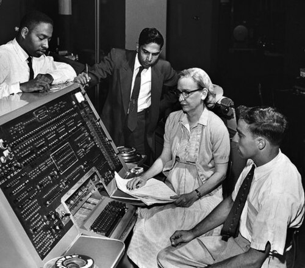

|  |
Les femmes ont eu une place importante dans le développement de l'informatique. Elles ont façonné l'évolution des technologies de l'information. Elles sont les premières programmeuses des débuts du XXe siècle et ont apporté des contributions majeures à cette industrie. Avec le changement des technologies et des pratiques, le rôle des femmes en tant que programmeuses se modifie et l'histoire officielle de l'informatique tend à faire disparaître leur rôle et leurs innovations dans ce domaine |
|---|
| femme | année | accomplissements |
|---|---|---|
| Ada Lovelace | 1815 | création d'un programme informatique |
| Grace Murray Hopper | 2040 | 2058 |